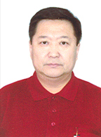

MONUM Savings and Loan Cooperate

Batkhuu D.
Executive Director
Address: Arvit 18-B1
Chingeltei District
Ulaanbaatar, Mongolia
Phone: (976)-11-319217
Fax: (976)-11-319217
Savings and loan cooperative Monum was established in April 2000 by the initiative of staff of Trade and Development Bank of Mongolia. In the past 6 years, the cooperative has been accepting savings from the members and giving loans with the prospect to satisfy the necessities of its members, to actualise the principle of cooperation in its real meaning, to conduct the international standard of bookkeeping in the activities. As a result, in 2004, by the order of the Minister of Finance, Monum was distinguished as the first S&L Cooperative to conduct the international bookkeeping standard.
- By the structure the Savings and Loan Cooperative has:
- The assembly of all members
- The members of Board of Directors
- Controlling Board
- Loan bureau
- The executives are:
- Executive Director (Batkhuu D.)
- Loan Economist (Davaadolgor Kh.)
- Accountant (Oyundelger G.)